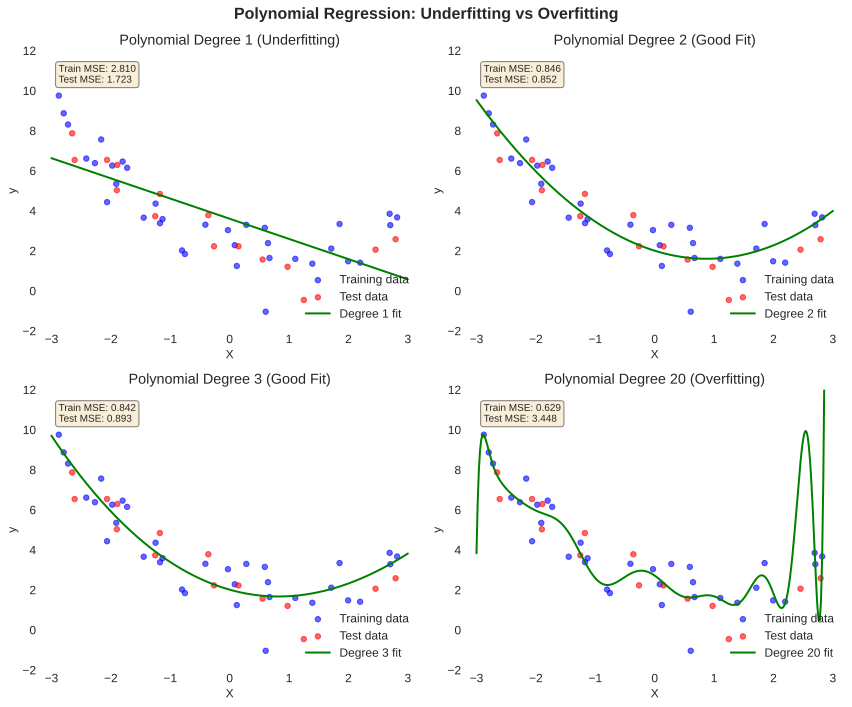
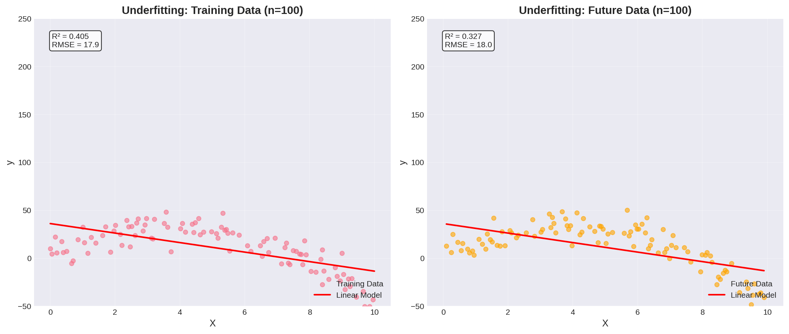
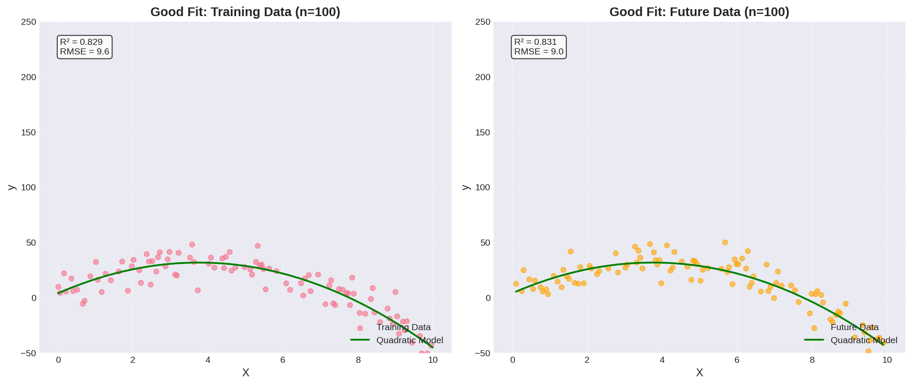
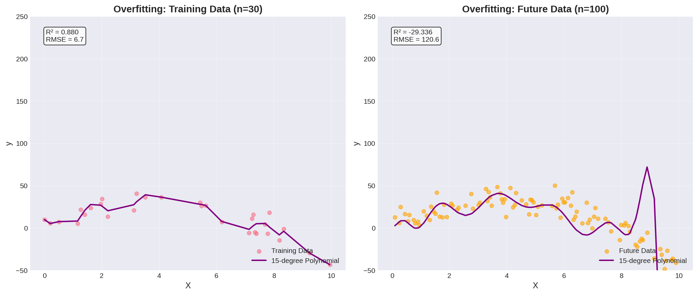
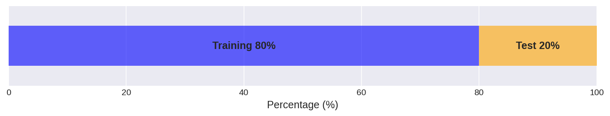
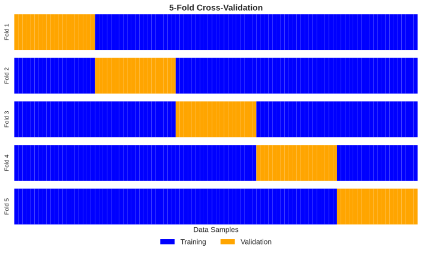
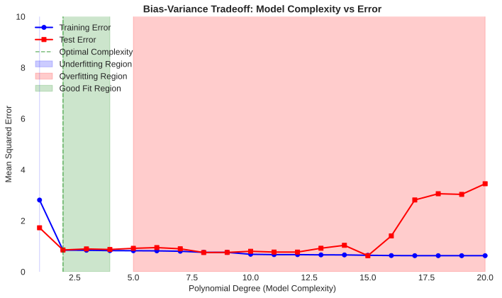

Machine Learning Fundamentals
Week 4 Part A: Core Concepts
The Challenge of Generalization
ISM6251 | Week 4
Overfitting • Train/Test Split • Validation • Cross-Validation
Today's Journey
From Problem to Solution
Our Learning Path:
- The Problem: Why do ML models fail?
- First Solution: Train/Test Split
- New Problem: Data leakage in model selection
- Better Solution: Train/Validation/Test Split
- Advanced Technique: Cross-Validation
Prerequisites & Context
Setting Expectations for Machine Learning
Traditional Statistics Focus
- Understanding relationships
- Hypothesis testing
- P-values and significance
- Inference about parameters
Machine Learning Focus
- Prediction accuracy
- Generalization to new data
- Model selection
- Avoiding overfitting
The Fundamental ML Challenge
Why Do Models Fail?
The Scenario
You build a model that achieves 99% accuracy on your data...
But it fails miserably in production!
What Went Wrong?
- Model memorized the training data
- Learned noise instead of patterns
- Too complex for the true relationship
The Two Extremes
Underfitting
- Model too simple
- Can't capture true patterns
- Poor performance everywhere
Overfitting
- Model too complex
- Memorizes training data
- Great on training, terrible on new data
Visualizing the Problem
A Concrete Example
Hidden Truth: The data comes from a 3rd-order polynomial with noise
y = 0.5x³ - 2x² + x + 2 + random_noise
The Challenge
- We don't know the true relationship
- We only have noisy samples
- Must choose model complexity
- Too simple → misses patterns
- Too complex → fits noise
The Question
How do we find the right complexity without knowing the truth?
Different Model Complexities
Fitting Polynomials of Various Degrees
Degree 1 (Linear)
Underfitting
- Can't capture curves
- High bias
Degree 2-3
Just Right
- Captures pattern
- Ignores noise
Degree 20
Overfitting
- Fits all noise
- High variance
Visual Examples
What Overfitting Looks Like
Underfitting
Too simple to capture the pattern
Good Fit
Captures pattern, ignores noise
Overfitting
Memorizes every data point
The First Solution: Train/Test Split
Simulating Real-World Performance
The Big Idea
Don't use all your data for training! Hold some back to test if your model actually works.
The Process
- Split data into two parts
- Train model on training set
- Evaluate on test set
- Test performance estimates real-world performance
Why This Works
- Test data is "unseen" by model
- Simulates deployment scenario
- Reveals overfitting immediately
- Honest performance estimate

Train/Test Split in Action
Detecting Overfitting
Implementation
from sklearn.model_selection import train_test_split
from sklearn.linear_model import LinearRegression
from sklearn.preprocessing import PolynomialFeatures
import numpy as np
# Generate data with hidden 3rd order relationship
np.random.seed(42)
X = np.random.uniform(-3, 3, 200).reshape(-1, 1)
y_true = 0.5*X**3 - 2*X**2 + X + 2
y = y_true.ravel() + np.random.normal(0, 1, 200)
# Split the data (70% train, 30% test)
X_train, X_test, y_train, y_test = train_test_split(
X, y, test_size=0.3, random_state=42
)
# Try different polynomial degrees
degrees = [1, 3, 20]
for degree in degrees:
# Create polynomial features
poly = PolynomialFeatures(degree)
X_train_poly = poly.fit_transform(X_train)
X_test_poly = poly.transform(X_test)
# Train model
model = LinearRegression()
model.fit(X_train_poly, y_train)
# Evaluate
train_score = model.score(X_train_poly, y_train)
test_score = model.score(X_test_poly, y_test)
print(f"Degree {degree:2d}: Train={train_score:.3f}, Test={test_score:.3f}")Results Reveal the Truth
Degree 1: Train=0.412, Test=0.385
↑ Both low = Underfitting
Degree 3: Train=0.895, Test=0.871
↑ Both high & close = Good!
Degree 20: Train=0.998, Test=-2.451
↑ Huge gap = Overfitting!
What We Learn:
- Underfitting: Both scores low
- Good fit: Both scores high & similar
- Overfitting: Train >> Test
Common Split Ratios
How Much Data for Testing?
Typical Splits
- 80/20: Most common default
- 70/30: More conservative testing
- 90/10: When data is scarce
Considerations
- More training data → Better model
- More test data → Better evaluation
- Need enough test data for reliable metrics
The Trade-off
Data Leakage
When Test Data Influences Decisions
What is Data Leakage?
Information from test set "leaks" into the training process through model selection decisions
How It Happens
- Evaluate multiple models on test set
- Choose best performing model
- Test set guided your choice
- Final test score is optimistically biased
The Consequence
You lose your unbiased performance estimate!
The test set is no longer representative of truly unseen data
Real Impact
- Overestimate model performance
- False confidence in production
- Unexpected failures when deployed
The Better Solution
Train / Validation / Test Split
The Three-Way Split
Add a middle dataset specifically for model selection!
🔵 Training Set (60%)
- Train model parameters
- Fit the data
- Used repeatedly
🟡 Validation Set (20%)
- Choose between models
- Tune hyperparameters
- Make decisions
🔴 Test Set (20%)
- Final evaluation only
- Used ONCE at the end
- Never influences choices
The Sacred Test Set
Protecting Against Self-Deception
🔒 The Golden Rule
The test set is locked away until the very end!
The Workflow
- Train many models on training set
- Evaluate all on validation set
- Select best based on validation
- Retrain on train+validation
- Test final model ONCE
Why This Works
- Validation set absorbs selection bias
- Test set remains truly unseen
- Final test score is unbiased
- Realistic performance estimate
Implementation Example
Proper Model Selection
# First split: separate test set
X_temp, X_test, y_temp, y_test = train_test_split(
X, y, test_size=0.2, random_state=42
)
# Second split: separate train and validation
X_train, X_val, y_train, y_val = train_test_split(
X_temp, y_temp, test_size=0.25, random_state=42
) # 0.25 of 0.8 = 0.2 of total
print(f"Train: {len(X_train)} samples")
print(f"Val: {len(X_val)} samples")
print(f"Test: {len(X_test)} samples")
# Try different models
models = {
'Linear': LinearRegression(),
'Poly-2': make_pipeline(PolynomialFeatures(2), LinearRegression()),
'Poly-3': make_pipeline(PolynomialFeatures(3), LinearRegression()),
'Poly-5': make_pipeline(PolynomialFeatures(5), LinearRegression())
}
# Evaluate on VALIDATION set
best_model = None
best_score = -float('inf')
for name, model in models.items():
model.fit(X_train, y_train)
val_score = model.score(X_val, y_val)
print(f"{name}: Validation R² = {val_score:.3f}")
if val_score > best_score:
best_score = val_score
best_model = (name, model)
print(f"\nBest model: {best_model[0]}")
# ONLY NOW evaluate on test set
test_score = best_model[1].score(X_test, y_test)
print(f"Final test R² = {test_score:.3f}")Output
Train: 120 samples Val: 40 samples Test: 40 samples Linear: Validation R² = 0.401 Poly-2: Validation R² = 0.823 Poly-3: Validation R² = 0.891 ← Best! Poly-5: Validation R² = 0.885 Best model: Poly-3 Final test R² = 0.878
Key Points:
- Used validation to choose Poly-3
- Test set untouched until end
- Final score is unbiased estimate
When Data is Precious
The Problem with Fixed Splits
The Dilemma
Small dataset (e.g., 500 samples)
60/20/20 split gives:
- Training: 300 samples
- Validation: 100 samples
- Test: 100 samples
Problem: Not enough data for reliable training!
Additional Issues
- Validation score depends on specific split
- Lucky/unlucky splits can mislead
- Wasting valuable training data
- High variance in performance estimates
K-Fold Cross-Validation
Using All Data for Training AND Validation
How It Works
- Split data into K equal folds
- For each fold k:
- Use fold k as validation
- Use other k-1 folds for training
- Record validation score
- Average all K scores
The Magic
- Every sample used for training
- Every sample used for validation
- K different performance estimates
- More robust than single split
Cross-Validation in Practice
Robust Model Selection
from sklearn.model_selection import cross_val_score
from sklearn.model_selection import KFold
# Separate test set first (sacred!)
X_work, X_test, y_work, y_test = train_test_split(
X, y, test_size=0.2, random_state=42
)
# Define cross-validation strategy
kfold = KFold(n_splits=5, shuffle=True, random_state=42)
# Try different models
models = {
'Linear': LinearRegression(),
'Poly-2': make_pipeline(PolynomialFeatures(2),
LinearRegression()),
'Poly-3': make_pipeline(PolynomialFeatures(3),
LinearRegression()),
'Poly-5': make_pipeline(PolynomialFeatures(5),
LinearRegression())
}
# Evaluate each model with cross-validation
for name, model in models.items():
# Get 5 validation scores
scores = cross_val_score(model, X_work, y_work,
cv=kfold,
scoring='r2')
print(f"{name}:")
print(f" Scores: {scores}")
print(f" Mean: {scores.mean():.3f}")
print(f" Std: {scores.std():.3f}")
print()
# Choose best model based on mean CV score
# Then retrain on all work data and test once!Results Show Stability
Linear: Scores: [0.39, 0.41, 0.43, 0.38, 0.40] Mean: 0.402 Std: 0.019 ← Low variance Poly-2: Scores: [0.81, 0.84, 0.82, 0.79, 0.83] Mean: 0.818 Std: 0.019 ← Consistent Poly-3: Scores: [0.88, 0.91, 0.89, 0.87, 0.90] Mean: 0.890 ← Best mean! Std: 0.015 ← Very stable Poly-5: Scores: [0.86, 0.89, 0.84, 0.91, 0.88] Mean: 0.876 Std: 0.027 ← Higher variance
What CV Tells Us:
- Mean: Expected performance
- Std: Reliability of estimate
- Multiple estimates → confidence
Choosing K in K-Fold
Common Choices and Trade-offs
Common Values
- K=5: Good balance, common default
- K=10: More robust, standard in research
- K=3: Faster, good for large datasets
- K=N (LOOCV): Leave-one-out, for tiny datasets
Trade-offs
Larger K:
- ✓ More training data per fold
- ✓ Less biased estimate
- ✗ More computation
- ✗ Higher variance between folds
The Bias-Variance Tradeoff
The Mathematical Foundation
Bias (Underfitting)
- Systematic error
- Model too simple
- Can't capture patterns
- Error even with infinite data
Variance (Overfitting)
- Sensitivity to training data
- Model too flexible
- Different data → different model
- Fits noise and outliers

Stratified Splits
Maintaining Class Balance
The Problem
Random splits might create unbalanced sets, especially with imbalanced classes
Example: Fraud Detection
- 95% legitimate transactions
- 5% fraudulent transactions
- Random split might give test set with 2% or 8% fraud
- Misleading performance metrics
Solution: Stratification
# Stratified split
X_train, X_test, y_train, y_test = train_test_split(
X, y,
test_size=0.2,
stratify=y, # Maintain class proportions
random_state=42
)
# Stratified K-Fold
from sklearn.model_selection import StratifiedKFold
skf = StratifiedKFold(n_splits=5)Summary: The Complete Picture
Our Journey Today
- Problem: Models that memorize instead of learn (overfitting)
- Solution 1: Train/Test split to detect overfitting
- Problem 2: Test data influences model selection (leakage)
- Solution 2: Train/Validation/Test split for honest evaluation
- Enhancement: Cross-validation for robust estimates with limited data
Key Takeaways
- Never train on test data
- Validation ≠ Test
- Test set is sacred (use once!)
- Cross-validation for small data
- Monitor train vs validation performance
Best Practices
- Start simple, increase complexity
- Use stratification for imbalanced data
- Set random seeds for reproducibility
- Document your split strategy
- Never "peek" at the test set
We'll apply these concepts to build, evaluate, and optimize linear regression models.